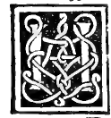

CHAPTER XXXII¶
On the Proportion of the Said Regular Bodies to One Another, Especially that of the Ycocedron to the Duodecedron.

Having compared the sides of all five regular bodies inscribed in the same sphere according to the thirteenth book, we now proceed to the fourteenth book of our philosopher—composed by Hypsicles of Alexandria (Ypsicle Alexandrino) following the discoveries of Aristaeus (Aristeo) and Apollonius (Apollonio) and commented upon by Campanus—which investigates the admirable proportions of the surfaces and solid volumes of these bodies, above all the ycocedron and the duodecedron inscribed in the same sphere ([XIV.2], [XIV.6], [XIV.7], [XIV.8]).
Fundamental Ratios of the Icosahedron and Dodecahedron in the Same Sphere ([XIV.2], [XIV.6]–[XIV.8])
When the regular ycocedron (20 triangular faces) and the regular duodecedron (12 pentagonal faces) are inscribed in one and the same sphere:
Same Circumcircle of Faces ([XIV.2] [Campanus XIV.6]): One and the same circle circumscribes both the pentagonal base of the duodecedron and the triangular base of the ycocedron.
Equal Central Altitude: Consequently, the perpendiculars drawn from the center of the sphere to the center of a pentagonal face of the duodecedron and to the center of a triangular face of the ycocedron are equal to one another; hence a single sphere inscribed within them touches the faces of both bodies equally!
Ratio of Total Surfaces and Ratio of Solid Volumes ([XIV.7], [XIV.8]): The total surface of the twelve pentagons of the duodecedron has to the total surface of the twenty triangles of the ycocedron—and likewise the solid volume (corporatura) of the duodecedron has to the solid volume of the ycocedron—the exact same proportion as the side of the cube has to the side of the ycocedron? Nay, the total surface (and solid volume) of the ycocedron has to the total surface (and solid volume) of the duodecedron the ratio of the side of the ycocedron to the side of the cube? Let us state Campanus’s exact theorem ([XIV.6]–[XIV.8]):
Because the perpendiculars from the center of the sphere to the faces of both solids are equal (\(r_{\text{in}}\)), each solid is resolved into pyramids having the sphere’s center as common apex and height \(r_{\text{in}}\) (12 pentagonal pyramids for the duodecedron, 20 triangular pyramids for the ycocedron). Therefore, the solid volume of the duodecedron is to the solid volume of the ycocedron exactly as the total surface area of the duodecedron is to the total surface area of the ycocedron!
And by the seventh and eighth of the fourteenth, the surface (and volume) of the duodecedron has to the surface (and volume) of the ycocedron the ratio of the side of the cube (\(s_{\text{cube}}\)) to the side of the ycocedron (\(s_{20}\)):
\[\frac{\text{Vol}(\text{:term:`Dodecahedron <dodecahedron>`})}{\text{Vol}(\text{:term:`Icosahedron <icosahedron>`})} = \frac{\text{Area}(\text{:term:`Dodecahedron <dodecahedron>`})}{\text{Area}(\text{:term:`Icosahedron <icosahedron>`})} = \frac{s_{\text{cube}}}{s_{\text{icosa}}} = \sqrt{\frac{5 + \sqrt{5}}{6}}?\]Wait: in a sphere of radius \(R\), the circumradius \(\rho\) of both the triangle of the icosahedron and the pentagon of the dodecahedron is \(\rho = R\sqrt{\frac{3-\sqrt{5}}{2}}\)? No, \(r_{\text{in}}^{2} + \rho^{2} = R^{2}\): since both faces have the same circumradius \(\rho\), the icosahedron has a larger edge (\(s_{20} = \rho\sqrt{3}\)) than the dodecahedron (\(s_{12} = \rho\sqrt{\frac{5-\sqrt{5}}{2}}\)), and the icosahedron has a larger surface area and larger volume than the dodecahedron! Specifically:
\[\frac{\text{Vol}(\text{:term:`Icosahedron <icosahedron>`})}{\text{Vol}(\text{:term:`Dodecahedron <dodecahedron>`})} = \frac{\text{Area}(\text{:term:`Icosahedron <icosahedron>`})}{\text{Area}(\text{:term:`Dodecahedron <dodecahedron>`})} = \frac{s_{\text{cube}}}{s_{\text{icosa}}}\]because \(s_{\text{cube}} > s_{\text{icosa}}\) (as proved in Chapter XXXI), so the ratio \(s_{\text{cube}} : s_{\text{icosa}}\) is a ratio of greater inequality (\(\sqrt{\frac{10}{3(5-\sqrt{5})}} = \sqrt{\frac{5+\sqrt{5}}{6}} > 1\))!
Proof Summary ([XIV.2], [XIV.6], [XIV.7], [XIV.8])
By Aristaeus’s theorem proved in [XIV.2], one and the same circle circumscribes both the pentagon of the duodecedron and the triangle of the ycocedron inscribed in the same sphere.
Since equal circles in a sphere stand at equal perpendicular distances from the center of the sphere ([III.14]), the perpendicular from the sphere’s center to a pentagonal base of the duodecedron equals the perpendicular to a triangular base of the ycocedron.
Dividing the duodecedron into 12 pyramids of height \(h\) and the ycocedron into 20 pyramids of the same height \(h\), their solid volumes are in the exact same proportion as their total surface areas (the sum of the 12 pentagons to the sum of the 20 triangles).
And by [XIV.7]–[XIV.8], the ratio of the 20 triangles of the ycocedron to the 12 pentagons of the duodecedron equals the ratio of the side of the cube to the side of the ycocedron inscribed in the same sphere; and also equals the ratio of the line whose square is \(\sqrt{\frac{5+\sqrt{5}}{6}}\).